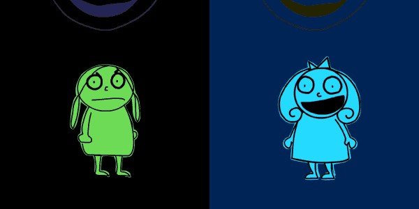

Hello, it's me! Wow, my Blogs have sucked lately, and I haven't been updating the 2001 Journal at all (even though I have like eight entries already written, I still need to edit them). Expect a double entry, like, NOW. And I will attempt to be meaningful. Just this once.
I titled my journal last week "Evening Thunderstorm" because, HELLO! What's up with all the rain? It's great. I even bought a rain jacket to celebrate the good times. That was Monday, I think I mentioned the trip to Commerce. Other then that, the week was uneventful...until the weekend at least. There is this girl Grace at work that I really like. She loves my t-shirts. She points them out to me every day. I even inspired her to get a Raggedy Anne shirt of her own at that new used and lightly used clothing store downtown. I'm happy I can inspire conformity. Let's all wear retro t-shirts!
Dial has had really low call volume, at least last week. My favorite program is Bellsouth. Swear to God, people call on Saturday night complaining about how no one can give them technical support to work their REMOTE CONTROL! They actually have the gaul to yell at ME about it! I'm like, "Sir, Bellsouth is not going to send a technician out at 12 a.m. to fix your REMOTE CONTROL...why don't you get off your ass and change the channel yourself." I mean, it's a sad world when you yell at the message center about not getting your premium cable late on a Saturday night. Read a book, go see a movie...get some perspective. They are by far the most interesting calls.
Saturday I went to Pride with Gen. We fulfilled the whole dream of sitting on the lawn with beer watching the lesbians. Sadly, it rained, and the lesbians were less than stellar. At least I got to see my sister beforehand. Plus, it's always nice seeing Gen's dad. Also, it was cool seeing Kyle at his booth, and plus Paul too after his long trip overseas. I love those too. Can't get enough of them.
Speaking of their fabulousness--I just got back from seeing Fahrenheit 9/11 with them. Great film, not as good as Bowling for Columbine. Everyone should see it. If your so confident in your (lying) President, then you should be capable of riding the wave of criticism and still see him in that radient and do-gooder light he so often likes to dawn. We're on to you Dubya. You're outta there.
For now, I'll do something productive. Talk to you all soon. Goodnight!

I've been working diligently to publish my Pride photos. I've even signed up for one of those impressive looking Yahoo Photo accounts. I like centralizing my web activities within the Yahoo Corporation. My website...mail...now photos! It's all deliciously centralized. Not bad. Webshots has some silly image transfer limit, how dumb is that?! Now I have to go through the exhaustive process of moving all my photos from Webshots to Yahoo. Oh, the website woe! You have no idea how much I slave to please the random website viewer. I am confident I will look back on the whole experience and be happy to know I made something really cool...I mean, could you do better? Anyways, see my Pride photos here. Did you here me?! Click there! *or here :-[
You'll have to check out my new material posessions. I think they are pretty dreamy :-*

I bought some new t-shirts yesterday. Thankfully, Amy finally made some Vendetta and Charlotte shirts. I bought them ASAP, probably not the most prudent choice. I should be more frugal, but they are just perfect! My taste in shirts is, well, not the most impressive, but certainly interesting. I swear to God, someone makes a comment on my shirts at least once a week, no matter how old they are. Grace was complementing me on my old-looking Pacman shirt that I hate, and she thought it looked "retro." How cool is that?! Well, my spidey sense was tingling, so I acted on it.
Also, did you know the Cure has come out with a new album? I wish I had some more cash, then it would be mine! I like the new song "The End of the World." I thought it was something they were playing on the Retroplex on 99X from the 80's or something--but it was new! Yay! I have a CD to listen to :-) And I want the Yoshimi DVD. I love new music :-D
"Go, if you want to
I never tried to stop you
Know, there's a reason
For all this. You're feeling
Low, it's not my call
You couldn't ever love me more..."
"The End of the World"
The Cure
Hola chicos, guess what! I'm in Ohio (again). Yup yup, I probably didnt mention it, but Jen and I have been planning this since probably last week. Reason for the big secret is because we wanted to surprise Mom. Thankfully, it worked. Anyways, I'll be here until Monday...but then you probably don't need to know that. I'm really not sure when I'll update this.
We took the cat along, which was a trip. She was very pissed at first, letting us know at every opportunity. Later on, the drugs kicked in, and she shut her mouth. Every so often, though, she'd remind us of just how pissed she was with a little whine. She never scratched us though. Not sure if anyone knows, but I have a good cat. She wouldn't attack me or Jen ever. Very well behaved, just gets alittle freaked out occasionally. I'm pretty sure she'd warm up to you though (unless you have vegetarian status ;-)
I bought the new Cure CD, and I thought it was ok. I have never owned a Cure CD, and I expected some angst and whining, and I got just that. I'm thinking the single is the catchiest, but you know how these things are. You have to give them a second listen. Jennifer certainly won't listen to it again, I swear, if she hears one note she doesn't like, it's trash and it stays in the trash. I almost did that to the Bloody Valentine CD I had, and granted, the majority of that is unlistenable, but there are those few jewels ("Soon" and "Sometimes") that rock my socks off.
So I better get back to breakfast. Expect pictures when I get batteries for the camera. I forgot the damn charger >:o